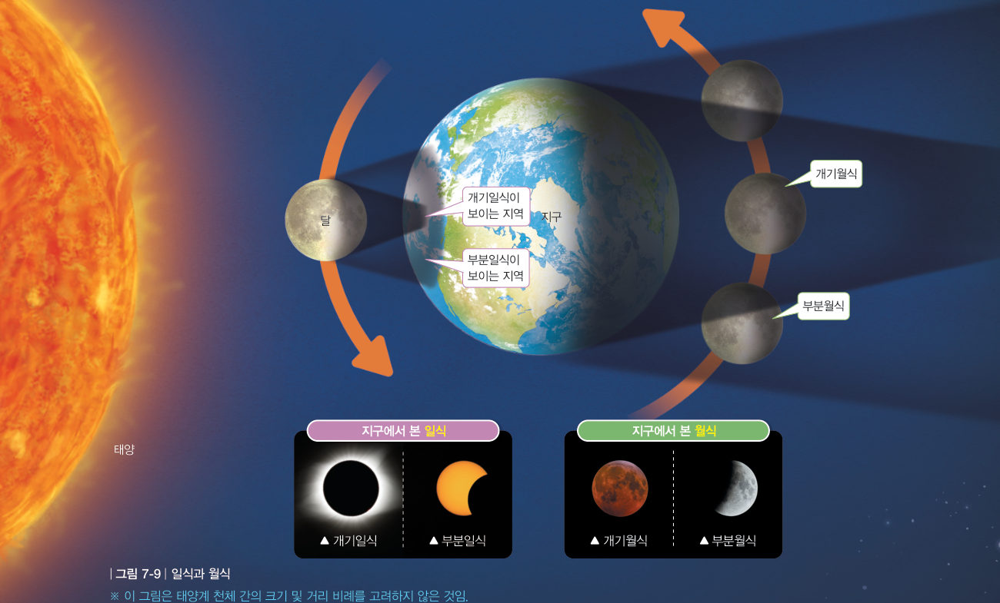
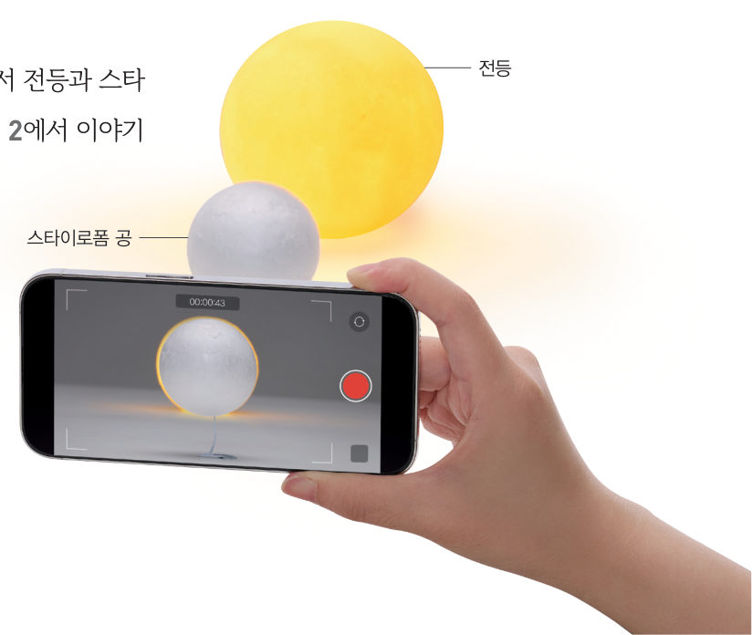

빛 센서(CDS)를 ‘지구의 관측자’로 삼아 전등(태양)을 바라보게 하고, 그 앞으로 스타이로폼 공(달)을 지나가게 해 보자. 밝기–시간 그래프로 개기일식과 부분일식의 차이를 확인하자.
준비물 아두이노 UNO, 브레드보드, 빛 센서(CDS), 10 kΩ 저항, 점퍼선, 작은 전등(또는 스마트 기기 손전등), 막대를 꽂은 스타이로폼 공 2 개(지름 5 cm, 3 cm), 검은 도화지 관, 노트북(크롬)

| 실험 | 공의 크기 · 지나간 길 | 가장 어두웠을 때 밝기(%) |
|---|---|---|
| A | 큰 공 · 일직선 위 | |
| B | 큰 공 · 비껴서 | |
| C | 작은 공 · 일직선 위 |
| 평가 항목 | 스스로 평가 |
|---|---|
| 조건(공의 크기, 지나가는 길)을 하나씩만 바꾸어 비교 실험을 했다. | |
| 밝기–시간 그래프로 개기일식과 부분일식의 차이를 설명했다. |